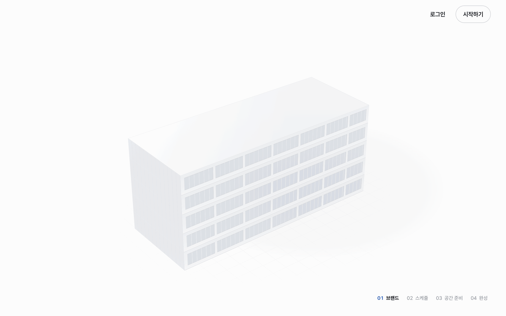
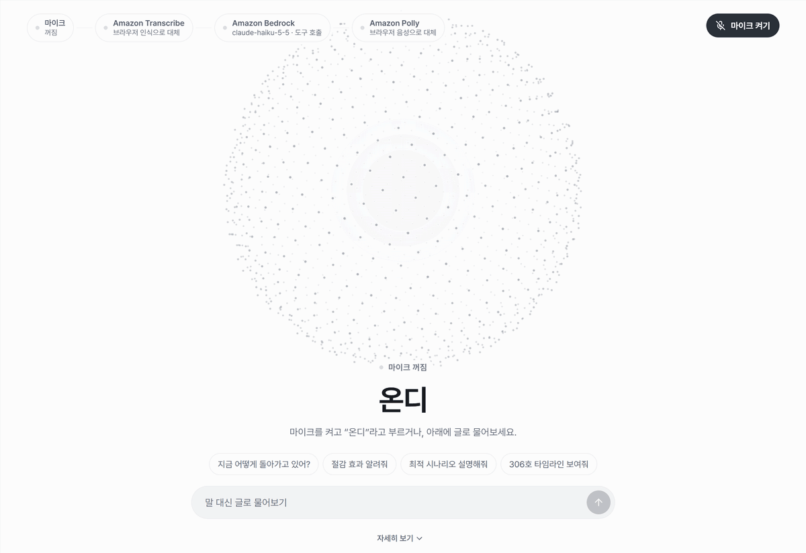
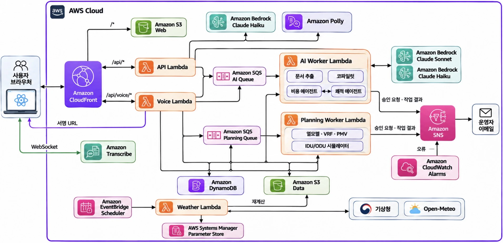
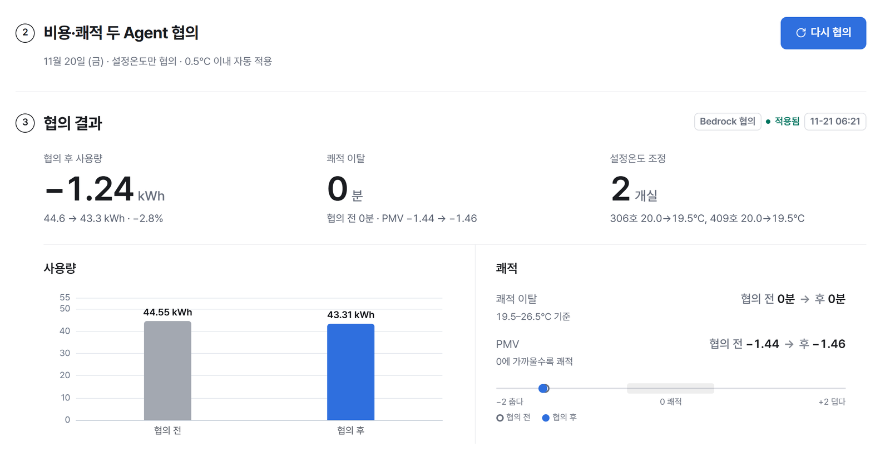

ON:D — 스케줄 기반 냉난방 자동 운전 AI
해커톤 대상2026 AWS x PNU AI 마에스트로 해커톤 · 과제 3 (Cloud) · 4인 팀 · 2026.11

- 문제 정의
-
- 강의실 냉난방을 수업 시작에 맞춰 켜서, 시작 직후에는 춥거나 덥다.
- 18시 일괄 차단 뒤 저녁 수업은 냉난방 없이 진행된다.
- 절약과 쾌적이 부딪히면 담당자의 감으로 정한다.
- 해결
-
- 강의 시간표와 날씨 예보로 강의실마다 켜는 시각을 계산해 미리 준비한다.
- 비용 에이전트와 쾌적 에이전트가 시뮬레이터를 도구로 호출해 설정온도를 협의한다. LLM은 제안하고, 시뮬레이터가 검증하고, 최종 결정은 정해진 규칙이 한다.
- 시설 담당자는 음성 비서에게 말로 현황을 묻고, 계획은 승인 후에만 반영된다.
- 역할
- 문제 정의와 서비스 기획, 아키텍처 설계. 시작 화면과 단계형 온보딩 화면을 만들었다.
- 기술
- 결과
- 현재 운영 방식 대비 학기 시뮬레이션 기준 전력 13.5%, 전기요금 17.8% 절감. (IT관 10개 강의실, 2026-2학기 시뮬레이션)



소스 코드는 팀 저장소(비공개)에 있습니다.